The company portal https://j-aautomation.com/j-aautomation/app is LIVE. A link to it never enters a simulation. For practice obtain a separately provisioned training URL, your own account, the permitted fictional project and dates, a visible environment identifier and the trainer’s reset procedure. Without those, use this guide as a read-only demonstration and enter only authorized genuine work.
Original BBS operational examples and some historical unpaid settlements were saved on the live deployment; their original exports were downloaded there. Later fictional issuance, payment, acceptance, correction and readiness exercises used isolated copies or separate synthetic portfolios. Each chapter identifies its dataset and checkpoint. A later screenshot does not change an earlier saved workbook or issued master.
A role, project membership, review permission, supplier authorization and dated crew delegation are separate. Use your own credentials. Inspect another person’s permitted operational record without signing in as them. Ordinary workers and project managers do not receive customer prices, internal cost, margins or another worker’s compensation.
Verify the result
Confirm your displayed identity, the environment, project number and work dates before saving. For training/reset or lost access contact admin@j-aautomation.com; send the route, role, project/record reference, time and visible error. Keep passwords, activation links, recovery codes and cookies private.
If you get stuck
For an empty project selector, ask the Owner to check account status and assignment/authorization coverage. Do not create a duplicate project or borrow another account.
J&A Automation · BBS role manual · 6 October 2026
Access · activate the invitation and sign in
Go here: Your trusted invitation → Activate your account → Return to sign in → Profile
Do the task
Check the portal address and named account against the invitation provided by the Owner. There is no public sign-up. For an already provisioned account, use the sign-in method supplied to you; do not attempt to activate someone else’s invitation.
For a single-use activation link, open Activate your account. Enter Full name and choose a Password of at least 12 characters, then Activate account. Wait for Account activated. You can sign in now. Do not repeatedly submit while Activating… is displayed.
Choose Return to sign in. Enter your account Email and Password and select Continue to workspace. If you previously enabled MFA, complete Verify your identity with the current Six-digit code and Verify and continue. Use a recovery code only through the offered Use a recovery code control.
Open Profile and verify the own-account name/email/role in Account security. Check the navigation and assigned project. A newly activated account can have zero assignments; activation alone does not grant project access or supplier/chief authority.
Verify the result
The activation success message precedes the separate sign-in. The illustrated new Worker signed in and reached their own Profile; no assignment or financial permission was implied.
If you get stuck
An expired or already used link displays This invitation could not be activated. It may have expired or already been used. If activation already succeeded, return to sign in. Otherwise request a new invitation from the Owner; reloading does not renew the old link.
For offline, temporarily unavailable or rate-limited activation, retain the entered name/password privately, restore connectivity or wait for the displayed retry interval, then retry. An unconfirmed response is not proof of an active account.
For an incorrect password, inactive account or lost access, contact admin@j-aautomation.com from your verified account/contact channel. Supply identity and the visible error; never send the password. This guide does not promise a public password-reset form. The initial Owner is provisioned by the platform operator; an existing Owner provisions the remaining team.
J&A Automation · BBS role manual · 6 October 2026
Access · activate the invitation and sign in
Isolated new recipient: the native activation success message. The password remains masked; this is separate from sign-in.
J&A Automation · BBS role manual · 6 October 2026
Access · activate the invitation and sign in
Reusing the same single-use training invitation shows the genuine recovery message. Return to sign in if already activated; otherwise request a new invitation.
J&A Automation · BBS role manual · 6 October 2026
Trainer setup · prepare a normal cycle before exceptions
Ask the trainer to provide the following checkpoint sheet before reproducing a lesson. Reusing a shared historical BBS period does not reset it. A production URL is never a training switch.
Checkpoint
Required starting condition
Identity and environment
Own correctly provisioned role/profile; isolated URL and visible environment identity.
Project and dates
Exact project number, timezone and unused eligible lesson dates; membership and relevant grants cover both current access and the work date.
Source state
Named source IDs and durations/amounts; ordinary starting drafts/submissions; no unrelated correction already open.
Financial/evidence locks
List issued/closed periods, finalized settlements and signed report versions. Teach ordinary correction on an unlocked scope first.
Expected outcome
Saved state, source count, actual total and appropriate own/customer/internal output. Include the receiving role and result.
Reset
Operator restores the prepared database AND private documents together to the named checkpoint while training is stopped. Trainees do not delete financial history to reset a lesson.
Verify the result
The new normal Worker/Chief lesson uses BBS READINESS · normal work cycle (C-0050-P-2026100601) with initially unfinalized October work. Original BBS locked-period examples are exceptions. External/Supplier/PM October 13–19 and Finance October 26 demonstrations are separately labelled; Accounting can use a separate clean synthetic portfolio.
J&A Automation · BBS role manual · 6 October 2026
Review authority · who receives each source
Review is determined by the actual source, base role and current dated grants. Chief delegation alone grants recording, not approval. A Worker with Can review checked does not become a Project Manager or Finance user. Send a factual correction reason with every return.
Source / recorder
Operational reviewer and prerequisite
Next handoff
Internal own or chief-delegated time
Owner or Finance; assigned PM with current active Can review membership for this project.
Owner/Finance records commercial Billable or Non-billable review separately.
External/supplier time, including coordinator own time
Authorized Owner. Supplier authorization/recorder provenance keeps these sources outside the ordinary PM time queue.
Finance review follows Owner approval.
Own/delegated expenses
Owner or Finance; assigned PM with current project review grant. Check factual purchase, payer and evidence.
Owner/Finance classifies customer recovery and worker reimbursement separately.
Daily and Technical reports, including supplier profiles
Owner or Finance; assigned PM with current project review grant and permitted project scope.
Owner/Finance prepares the customer period report and version-bound acceptance where required.
PM’s own work
Route it to another authorized reviewer for an independent factual check. Do not infer a universal self-review prohibition solely from a job title.
Personal reports/pay outputs remain own scope; financial treatment belongs to Owner/Finance.
If you get stuck
If the intended source is absent, check source type, state, dates, assignment/review grant and supplier authorization before searching another queue. A review-enabled Worker Chief variant is not exposed by the current role model; Owner must provision the genuinely permitted reviewer role and grant. Never use a colleague’s credentials to bypass this boundary.
J&A Automation · BBS role manual · 6 October 2026
Understand Chief authority before recording crew work
Isolated BBS role lab · genuine Chief Worker account · dated October 1–31 delegation
Go here: Sign in → Crew hours
Chief is an ordinary Worker account with dated person/project delegation. Account role, project assignment, crew delegation and Can review are separate. The readiness example uses C-0050-P-2026100601 with an entry-only Chief and Worker 2 assigned October 1–31. Worker 1 has a separate October 1–8 assignment/grant for the October 7 two-person receipt exercise. Both people’s project assignments and the delegation must cover today as well as the selected work date.
Before practising obtain an operator training URL, own account, visible environment identity, permitted scope and reset instructions. No shared training credentials are provided. Live company links remain live company services. Every illustrated mutation here is fictional and isolated.
Crew hours handles delegated operational entry. Time, Expenses, Reports and My Pay still handle your own Worker records. Delegation does not reveal crew compensation or grant Finance access; Chief authenticated Approvals and Finance requests returned 403.
For account access and recovery, use the common Access (access), Security (security), Review authority (review-authority) and Trainer setup (trainer-setup) sections. Those controls are shared across roles; a job title does not grant access.
Do the task
Confirm your own Chief account and the isolated environment. Open Crew hours.
Select Project and Work date, then Show project. Check that intended members are offered for this date.
Verify the result
The actual new-project crew list offered Worker 1 and Worker 2 for October 7 after the required current and work-date coverage was granted. A future-only October 9 grant did not offer that worker today.
If you get stuck
Ask the Owner to correct expired/missing delegation or assignment. Do not select another account to gain access.
J&A Automation · BBS role manual · 6 October 2026
Understand Chief authority before recording crew work
Actual Chief delegated entry controls; authority comes from dated grants, not the word Chief.
J&A Automation · BBS role manual · 6 October 2026
Save the same actual hours for multiple crew members
Isolated readiness lab · genuine entry-only Chief · two delegated workers · October 7, 2026
Go here: Crew hours → Log team hours
Same hours for each selected member applies the full duration to each person. This exercise saved 0.5-hour Travel for Worker 1 and 0.5-hour Travel for Worker 2: two separate 30-minute sources, one hour total. These are distinct from Worker 2’s own regular-work correction.
The activity is explicitly synthetic shared crew travel. Each saved row retains its own person, date and ID; the Chief’s own time remains separate.
Do the task
Choose Project and Work date → Show project. Check that current delegation and both assignment date ranges cover the people and selected date.
Tick only the actual Team members. Choose Same hours for each selected member, enter Hours per member, Time category and factual Work performed.
Leave Submit for approval now off; use the full Save 2 people button. Inspect the two saved Draft sources before adding a receipt.
After verifying each source and the single receipt/allocation, use each intended row’s Submit action and confirm Submitted; the permitted reviewer acts separately.
Verify the result
Native readiness result: separate 30-minute Travel Draft sources for two people. The receipt exercise follows those specific eligible sources; it does not add the Chief’s own time.
If you get stuck
If one person/time is wrong, correct that draft through its permitted row controls before submitting. Do not save another batch while trying to locate the first one.
J&A Automation · BBS role manual · 6 October 2026
Save the same actual hours for multiple crew members
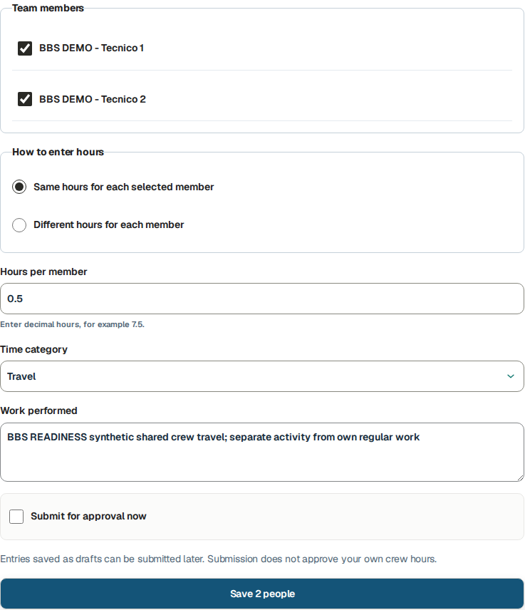
Native two-person crew form, including full Save 2 people control.
J&A Automation · BBS role manual · 6 October 2026
Use different actual hours and submit deliberately
Isolated BBS role lab · genuine Chief Worker account · dated October 1–31 delegation
Go here: Crew hours → Different hours for each member
The October 15 exercise entered 0.5 h for Worker 1 and 1 h for Worker 2, category Travel. Individual hours reflect each person’s actual activity. Checking Submit for approval now combines save and submission; it does not approve the work.
Do the task
Select the authorized members and Different hours for each member. Enter each worker’s hours, category and shared factual Work performed.
Review the selected date/member names and tick Submit for approval now only when ready. Use Save 2 people.
Inspect both resulting rows and their states. The PM approved Worker 1’s 0.5 h and returned Worker 2’s 1 h for 0.75 h correction.
Verify the result
Separate 30 minute and 60 minute sources were saved as Submitted. Their later review outcomes are independent.
If you get stuck
An absent member or blocked date requires Owner delegation/assignment review. An unsent row can be corrected through its current controls; reviewed history requires the proper linked process.
J&A Automation · BBS role manual · 6 October 2026
Use different actual hours and submit deliberately
Actual individual-hours form before saving 0.5 h and 1 h.
J&A Automation · BBS role manual · 6 October 2026
Use different actual hours and submit deliberately
Saved native individual sources, Submitted for operational review.
J&A Automation · BBS role manual · 6 October 2026
Record one crew expense with its actual payer
Isolated readiness lab · actual Chief-entered single USD 20 receipt · October 7, 2026
Go here: Crew hours → Add expense for [worker]
Record one purchase with its actual attributed worker, payer and related hours. The tested Add expense for Worker 2 link preselected the readiness project, October 7 date and Worker 2’s 0.5-hour Travel source. The receipt explicitly says synthetic training only.
Record expense for, Who paid and later allocation are distinct. Here one USD 20 meal expense was recorded for Worker 2, paid by Worker, then split 10+10 across two valid shifts. The allocation does not create another purchase or reveal colleagues’ reimbursement/pay.
Do the task
From the intended saved crew row choose Add expense for that worker. Check Record expense for, Project, Date and Related logged hours.
Select Meals, attach the one receipt and enter Amount 20, Currency USD, Who paid Worker, Vendor and factual Description. Use Save draft, then reopen the exact saved expense.
Allocate the receipt only after its facts and linked source are accurate. Inspect the saved split, use the expense detail Submit, and verify Submitted before handing it to the permitted reviewer.
Verify the result
One current USD 20 Meals expense carries the actual synthetic receipt and initial Worker 2 source; the two allocations total that one purchase.
If you get stuck
Before allocation, an incorrect Chief-entered expense Draft can offer Withdraw crew expense draft with a reason. The native test retained the incorrect receipt as Withdrawn. Uploading its identical file again was blocked as existing private content; no new expense was saved. Ask the Owner to resolve the original receipt rather than evading duplicate protection. A separate, distinct synthetic Meals purchase was used for the allocation exercise. Once allocated, protected changes need the Owner/reviewer handoff.
J&A Automation · BBS role manual · 6 October 2026
Record one crew expense with its actual payer
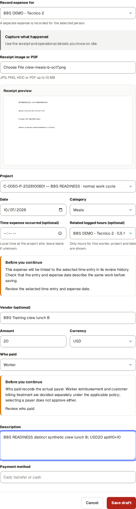
Native linked expense form shows worker, project, date, related shift, receipt and full Save draft button.
J&A Automation · BBS role manual · 6 October 2026
Record one crew expense with its actual payer
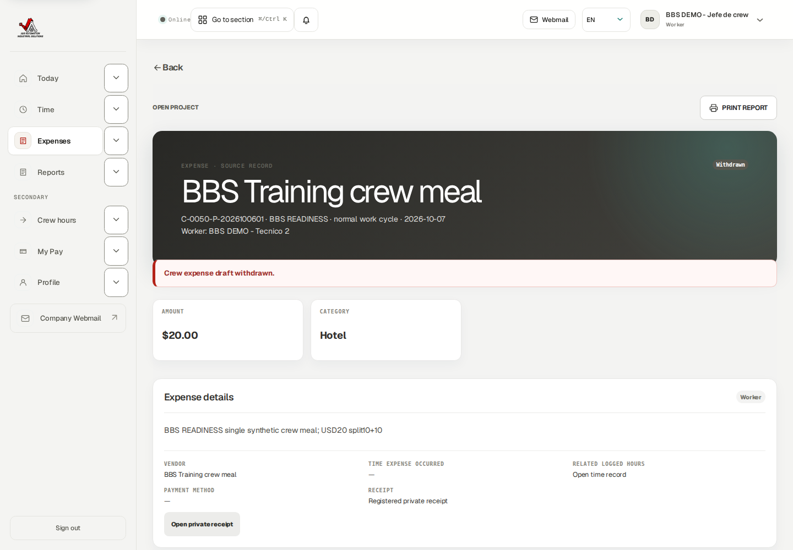
Supported pre-allocation recovery: incorrect crew expense Draft withdrawn with a reason.
J&A Automation · BBS role manual · 6 October 2026
Split one receipt across worked sources
Isolated readiness lab · actual single-receipt allocation and state limits
Go here: Crew hours → Allocate one crew receipt
First save the two actual crew time sources, then save one Chief-entered receipt expense linked to one of them. In this exercise the expense and shifts belong to the same readiness project and October 7 date.
Select at least two eligible time rows for different workers, including the expense’s originally linked Worker 2 shift and the attributed/payer worker. Enter a positive amount for each. The preview must show the amounts exactly match the one USD 20 receipt: 10 + 10 = 20.
After Save receipt allocation, inspect the saved group and one expense. This deployed flow provides no Unallocate control. An allocated receipt is protected from ordinary changes to amount, person, project/date, linked shift and receipt file. A mistaken saved split requires the Owner/reviewer support handoff; do not create another full expense or change hours to force the split.
Do the task
In Allocate one crew receipt choose Receipt expense after the single expense is saved.
Select the eligible Worker 1 and Worker 2 shifts; include the initial linked Worker 2 source. Enter Amount for each worker 10 and confirm Amounts match the receipt.
Use Save receipt allocation. Reopen the saved allocation and expense, verify USD 10 + USD 10 = USD 20, then Submit the expense and intended time rows for review.
If the saved split is wrong, stop at the protected allocation and give the Owner/reviewer the expense ID, allocation ID, both source IDs, receipt amount and intended split.
Verify the result
The actual native saved allocation totals USD20 across two USD10 rows. After separate native Submit actions, the independent Owner approved the receipt and both crew time sources. Exact IDs/states are in the readiness manifest. Allocation is not reimbursement, worker settlement, invoice issuance or bank payment.
If you get stuck
Allocated receipts can lock draft edit actions. Investigate the existing allocation/expense with the reviewer rather than making duplicate expenses or altering hours to force a split.
J&A Automation · BBS role manual · 6 October 2026
Split one receipt across worked sources
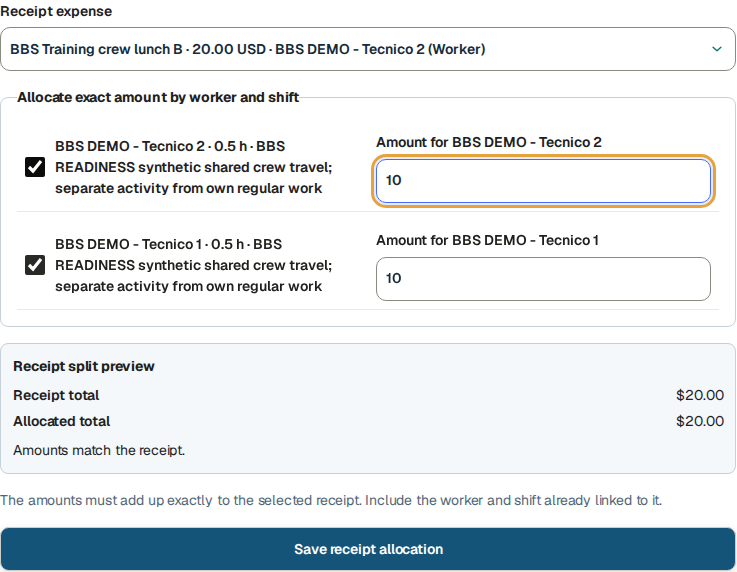
Native selection of the one saved receipt and eligible two-person 10+10 allocation.
J&A Automation · BBS role manual · 6 October 2026
Split one receipt across worked sources
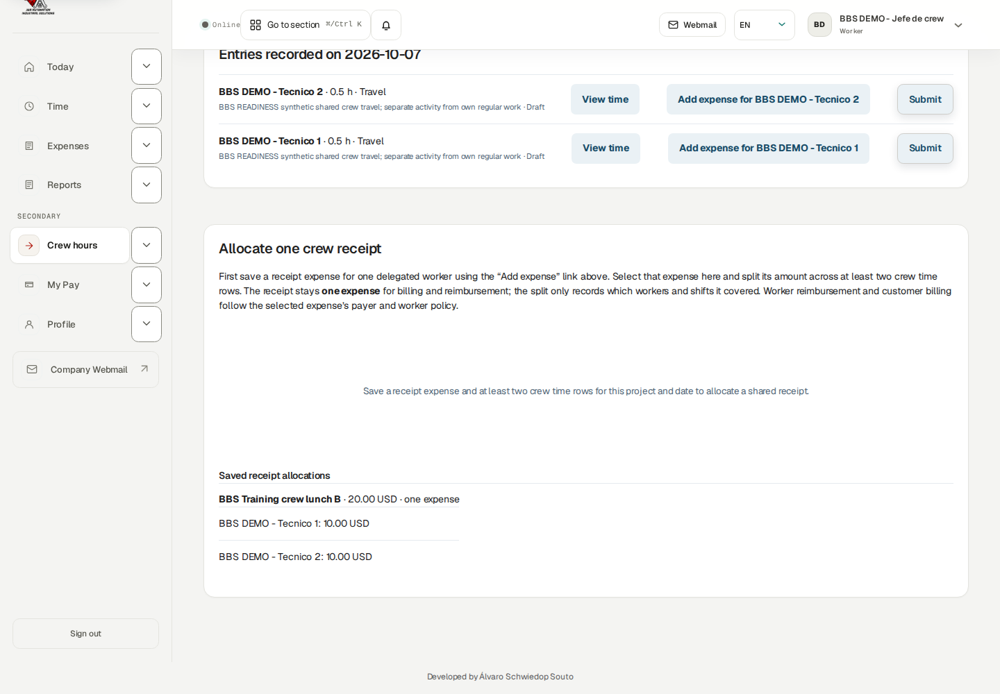
Actual saved split of one USD 20 receipt.
J&A Automation · BBS role manual · 6 October 2026
Split one receipt across worked sources
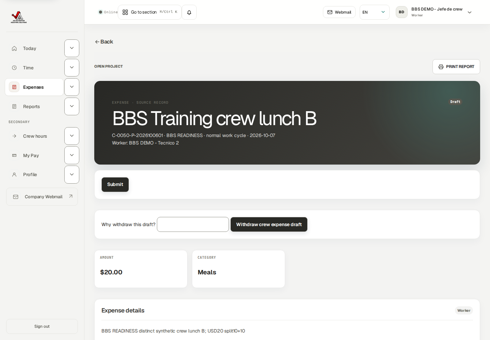
Native allocated-receipt detail and its current offered controls; no Unallocate or unrestricted edit is offered.
J&A Automation · BBS role manual · 6 October 2026
Split one receipt across worked sources
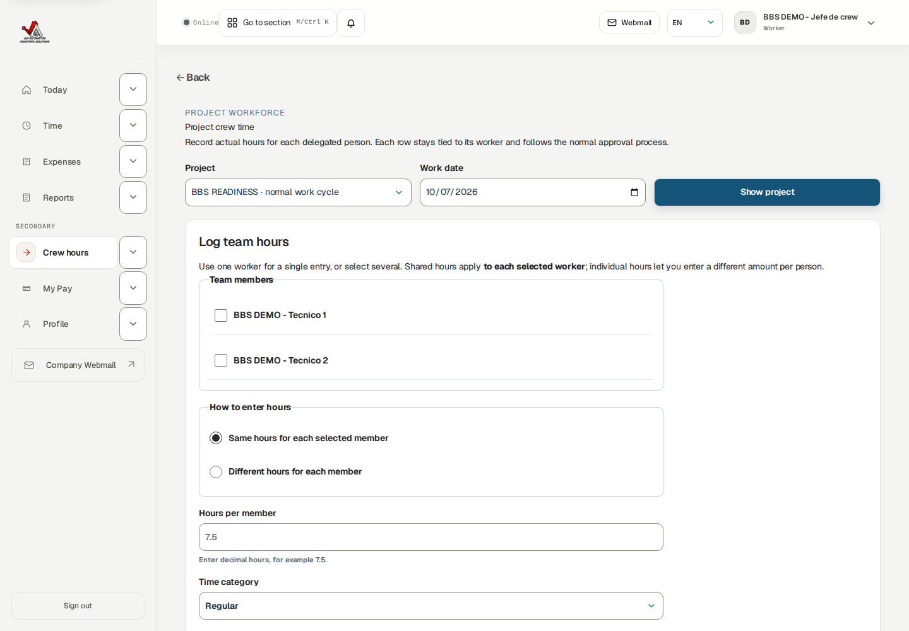
Both separate crew shifts Approved after independent native Owner review; one allocated receipt is also Approved.
J&A Automation · BBS role manual · 6 October 2026
Hand operational work to the permitted reviewer
Isolated BBS role lab · genuine Chief Worker account · dated October 1–31 delegation
Go here: Crew hours → submitted sources; reviewer → Approvals
The tested entry-only Chief uses an ordinary Worker account with dated delegation. The Owner independently reviewed the new two crew sources and one allocated receipt. Finance reviews any later financial treatment.
Operational approval, billability, customer invoicing, worker settlement, reimbursement and cash payment are separate stages. A Chief should not assume a submitted row is paid or invoice-ready.
A Worker assignment Can review grant leaves the base role Worker and does not enable Approvals. Source checks require the appropriate base PM/Owner/Finance authority plus current project scope. A review-capable Chief variant is unavailable on this Worker-role deployment; no Chief self-review success is claimed. See common Review authority (review-authority).
Do the task
Inspect each member’s source state after submission. Send the PM record IDs, work date and any material evidence or safety concern.
Read a returned reason on the actual source. Correct through the permitted linked flow; do not silently overwrite history.
Hand financial policy/settlement issues to Finance/Owner.
Verify the result
Read source states after every action. The new own weekly sources and report/receipt exercises have explicit IDs and current states in the readiness manifest; earlier PM-approved records remain historical examples.
If you get stuck
If Approvals is denied, ask the Owner who has review permission. Never borrow the reviewer’s account.
J&A Automation · BBS role manual · 6 October 2026
Record and submit your own Chief hours separately
Isolated readiness lab · actual Chief own ordinary and linked correction weekly submission
Go here: Time → Log time; Submit this week
Your own Time records remain separate from delegated crew rows. The readiness test returned a one-hour Chief source for a correction to 0.75 hour, withdrew an incorrect 0.9-hour correction with a reason, and recreated the accurate linked 0.75-hour draft.
A separate 0.25-hour own draft and the active linked 0.75-hour correction both submitted through the Chief’s own displayed October 5–11 week. Two drafts became Submitted and zero remained. That count does not include delegated people’s crew rows.
Do the task
Use your own Time → Log time → Save draft for your actual personal work. Read a returned own source’s reason separately from crew corrections.
For a wrong unsubmitted linked correction, use Why withdraw this draft? → Withdraw correction draft, then recreate from the original with accurate values. Linked time drafts have no unrestricted Edit control after creation.
Choose Week of → Open week. Inspect ordinary and correction sources, then Submit all week drafts.
Open each exact source and confirm Submitted plus zero remaining own drafts. Independent operational review is still required.
Verify the result
Actual Chief own weekly result: ordinary 15-minute source plus linked 45-minute correction Submitted, original 60-minute source Needs changes, incorrect withdrawn 54-minute draft retained in history.
If you get stuck
Check the own draft count before submitting a week. For linked or financially guarded sources use exact record controls and Finance handoff.
J&A Automation · BBS role manual · 6 October 2026
Record and submit your own Chief hours separately
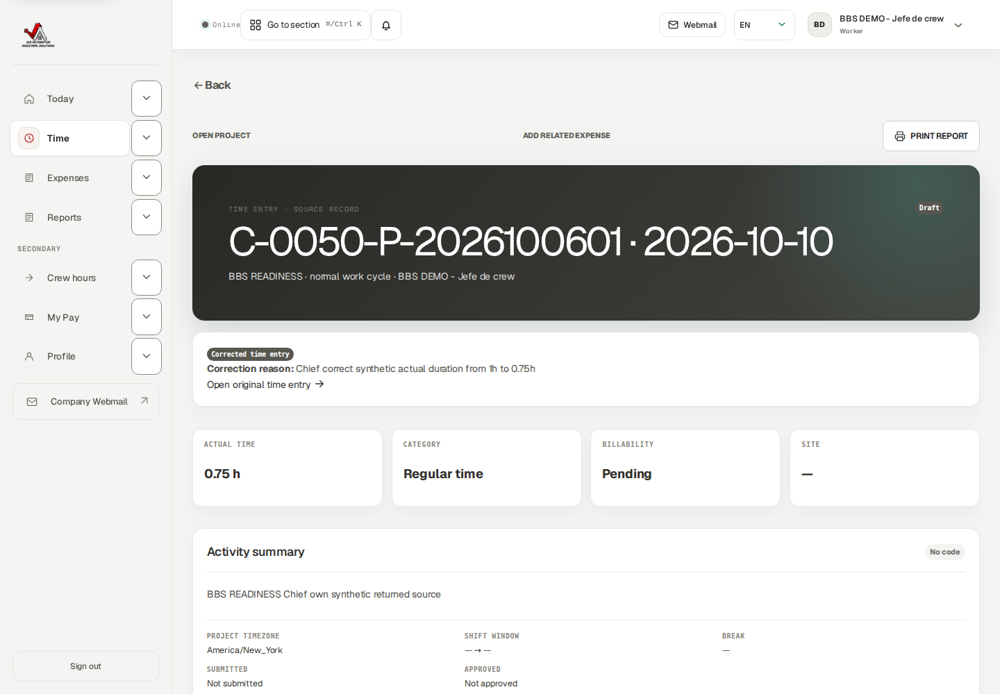
Own accurate linked 0.75-hour correction Draft.
J&A Automation · BBS role manual · 6 October 2026
Record and submit your own Chief hours separately
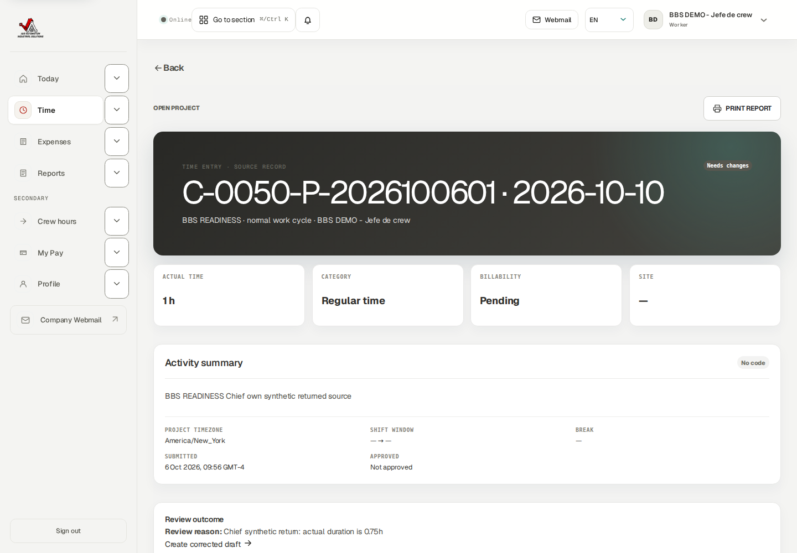
Own incorrect linked correction was actually withdrawn before submission.
J&A Automation · BBS role manual · 6 October 2026
Record and submit your own Chief hours separately
Own selected week includes two eligible drafts.
J&A Automation · BBS role manual · 6 October 2026
Record and submit your own Chief hours separately
Native own weekly action completed; zero remaining drafts, with both source states independently checked.
J&A Automation · BBS role manual · 6 October 2026
Correct a delegated returned entry
Isolated BBS role lab · genuine Chief Worker account · dated October 1–31 delegation
Go here: Crew hours → View time → Create corrected draft
The genuine PM returned Worker 2’s 1 h travel source with a 0.75 h reason. The delegated Chief could create and submit a linked replacement because the October 15 period was outside that worker’s finalized October 1–14 settlement. Delegation is still checked for the source/date.
Do the task
Open the returned crew source using View time. Read Needs changes and the reviewer’s reason.
In Create corrected draft enter Reason, Work date, Time category, Actual hours 0.75 and factual Work performed. Create the correction.
Inspect the new Draft and original link. Use Submit for approval now on this crew correction detail.
After PM review, refresh the selected date and inspect the Approved replacement.
Verify the result
The original 1 h remains Needs changes; the linked 45 minute 0.75 h replacement is Approved. Worker 1’s 0.5 h remains separately Approved.
If you get stuck
A settled/paid compensation guard requires Finance’s explicit adjustment; do not duplicate a crew entry or change its date/person to evade it. The Chief does not gain self-approval by creating a correction.
J&A Automation · BBS role manual · 6 October 2026
Correct a delegated returned entry
Native returned delegated source and reviewer reason.
J&A Automation · BBS role manual · 6 October 2026
Correct a delegated returned entry
Actual delegated correction form 1 h→0.75 h with reason.
J&A Automation · BBS role manual · 6 October 2026
Correct a delegated returned entry
Current crew rows: Approved 0.5 h and 0.75 h, historical original 1 h preserved.
J&A Automation · BBS role manual · 6 October 2026
Write a Chief daily handover report
Isolated readiness lab · own Chief authored report · synthetic October 12, 2026
Go here: Reports → New daily report
Chief reporting uses the Chief’s own author account. The native own Daily form has no arbitrary-worker selector. Delegated time entry does not imply report author impersonation.
Write factual crew coordination/conditions, with member source IDs when needed. A Daily report does not replace each actual timesheet or prove customer acceptance.
The own readiness Draft’s source PDF was generated in English, checked Ready with Refresh and downloaded as a readable native file before Submit for review. Language selects English, Spanish or Portuguese; the output remains scoped to this own authored operational report.
The Owner actually returned the readiness Daily report. The Chief edited its next-day handover with Save changes and resubmitted the same report ID. Return recovery is a versioned edit of an ordinary source; it is not the Approved-source linked correction flow.
Do the task
Select Project, Work date and Site / shift; fill Shift summary and Tasks completed. Include actual problems/actions, downtime, standby, open items, next day plan and safety flag where applicable.
Use Save daily report. Inspect the Draft, then Submit for review.
Confirm Submitted and the permitted reviewer’s later state.
Verify the result
Actual own Daily Draft → Ready PDF → native Download → Submitted was tested. A draft PDF and report submission do not establish customer acceptance.
If you get stuck
Ordinary Draft and Needs changes reports can be edited with the offered Save changes control and resubmitted as the same versioned source. Approved unlocked reports may offer a linked correction; the created correction is not freely editable. A finalized period snapshot requires the authorized Owner/PM handoff.
J&A Automation · BBS role manual · 6 October 2026
Write a Chief daily handover report
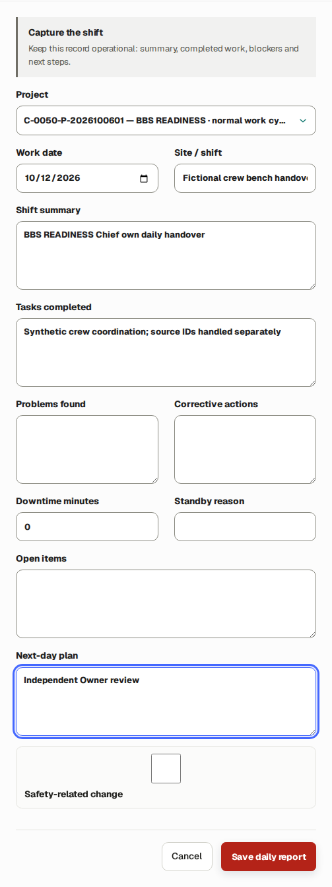
Own Chief Daily form with the complete native save control.
J&A Automation · BBS role manual · 6 October 2026
Write a Chief daily handover report
Own source PDF Ready while the report remained Draft.
J&A Automation · BBS role manual · 6 October 2026
Write a Chief daily handover report
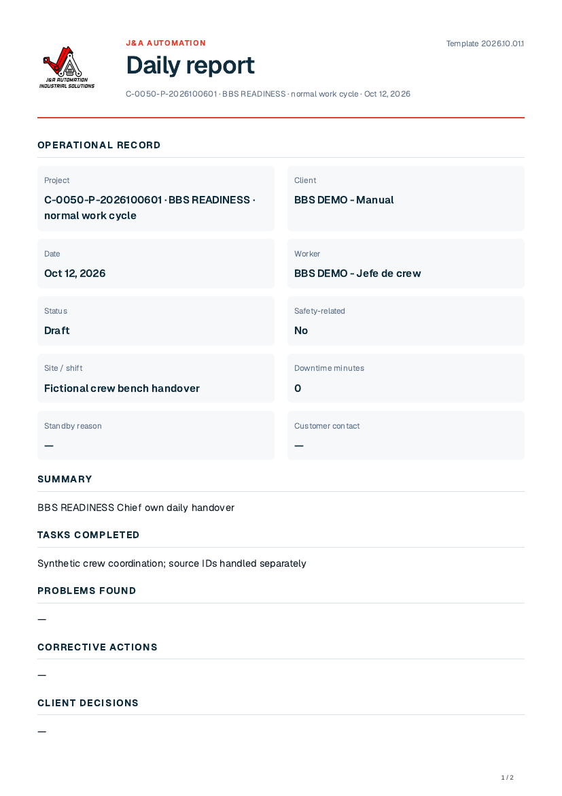
First page rendered from the actual own Chief Daily browser-downloaded PDF.
J&A Automation · BBS role manual · 6 October 2026
Document your technical findings and validation
Isolated readiness lab · own Chief authored report · synthetic October 12, 2026
Go here: Reports → New technical report
The Chief’s Technical report is its own authored evidence, separate from crew hours and customer billing. This worked system is explicitly a fictional bench; no live PLC change occurred.
Capture equipment identifiers, Problem / symptom, Diagnosis / root cause, Change performed, production impact, validation/result, open risk and rollback. Safety/change authorization remains governed by real responsible-person procedures.
The own readiness Draft’s source PDF was generated in English, checked Ready with Refresh and downloaded as a readable native file before Submit for review. Language selects English, Spanish or Portuguese; the output remains scoped to this own authored operational report.
Do the task
Open New technical report and identify Project, Work date and System / machine; fill applicable machine/platform/version fields and factual technical narrative.
Use Save PLC report, inspect the Draft, then Submit for review.
Check review state and hand genuine risks/open work to the responsible PM/technical reviewer.
Verify the result
Actual own Technical Draft → Ready PDF → native Download → Submitted was tested. A draft PDF and report submission do not establish customer acceptance.
If you get stuck
Ordinary Draft and Needs changes reports can be edited with the offered Save changes control and resubmitted as the same versioned source. Approved unlocked reports may offer a linked correction; the created correction is not freely editable. A finalized period snapshot requires the authorized Owner/PM handoff.
J&A Automation · BBS role manual · 6 October 2026
Document your technical findings and validation
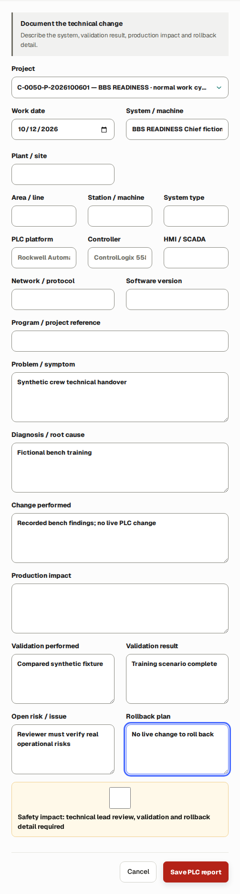
Own Chief Technical form with the complete native save control.
J&A Automation · BBS role manual · 6 October 2026
Document your technical findings and validation
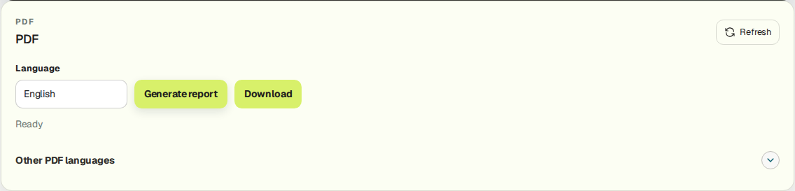
Own source PDF Ready while the report remained Draft.
J&A Automation · BBS role manual · 6 October 2026
Document your technical findings and validation
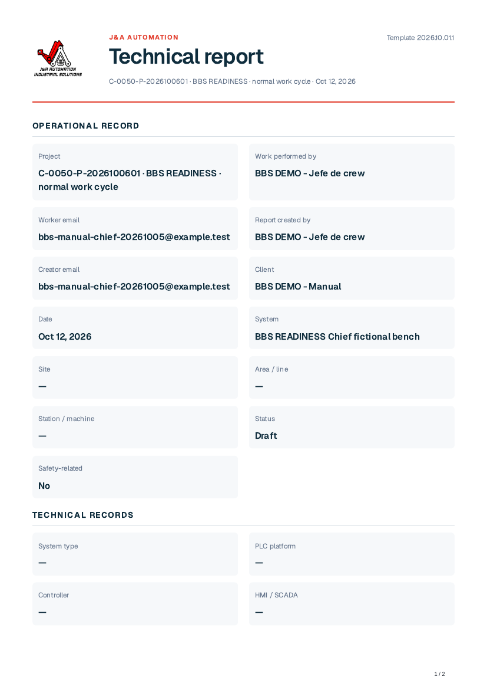
First page rendered from the actual own Chief Technical browser-downloaded PDF.
J&A Automation · BBS role manual · 6 October 2026
Read only your own pay and reimbursements
Isolated BBS role lab · genuine Chief Worker account · dated October 1–31 delegation
Go here: My Pay → Apply period
The Chief sees its own compensation, not crew members’ agreements/payments. The historical October 1–4 snapshot shows 10 actual hours, USD 400 approved compensation and USD 20 approved reimbursement; copied training payment records have no claim to a real bank transfer.
Customer daily/weekly/hourly units and invoice cadence do not dictate worker settlement or payment cadence. Expected date, reviewed amount, paid and remaining are different fields. Source estimates follow dated worker rules, not crew receipt allocations.
The native own Chief October 1–6 statement was generated and both PDF and CSV downloaded Ready. It contains 735 approved minutes for this Chief only. These historical synthetic records do not claim a real bank transfer; no crew member’s private statement was accessed.
Do the task
Set From and Through, then Apply period. Confirm the displayed dates before requesting a statement.
Read your own approved/pending estimates and reviewed settlement/payment fields separately.
In Worker statement choose Generate report. While preparing, use Check statement status if offered or allow status to refresh. Download PDF and CSV independently only when Ready. Open both files and confirm identity, date range and own activity.
Verify the result
Crew hour delegation does not expose Worker 1/2 private pay. A split receipt does not create compensation or prove reimbursement.
If you get stuck
Send missing-rule/settlement/reimbursement questions to Finance with your own source/period. Do not infer another person’s pay from recorded hours.
J&A Automation · BBS role manual · 6 October 2026
Read only your own pay and reimbursements
Actual Chief own historical training payment view; not crew payroll visibility.
J&A Automation · BBS role manual · 6 October 2026
Read only your own pay and reimbursements
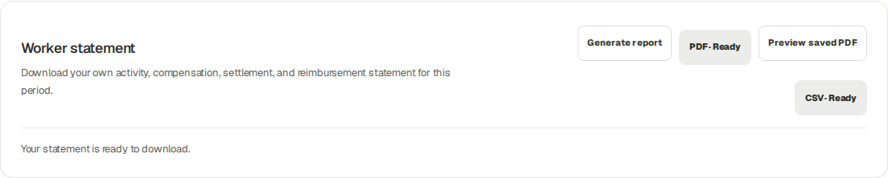
Native own Chief Worker statement: both PDF and CSV Ready for the selected historical training period.
J&A Automation · BBS role manual · 6 October 2026
Read your own plan and distinguish crew authority
Isolated BBS planning lab · synthetic October 20, 2026 work · genuine role sessions · no production hours
Go here: Today → Upcoming assignments; Crew hours → Project / Work date
The Owner/PM publishes a work plan to assigned people. Selecting the Chief and both technicians creates an individual published planning row for each person. Your Today agenda shows your own plan; dated crew delegation does not turn it into a combined crew agenda.
In this connected isolated example, October 20 is planned for 08:00–16:00 UTC with eight planned hours per person. Publication initially created zero actual time. The Owner separately configured an expected weekday schedule of 480 minutes from October 19.
Project membership, work planning and crew delegation are separate dated controls. Both the Chief and managed worker need project coverage for the work date, and the delegation must cover that date. Receiving a plan does not grant permission to record another worker’s hours.
There are no Accept, Reject or Mark completed goal buttons on the assignment cards. Use Activity summary and Daily/Technical reports to describe completed tasks, remaining work, problems and handover.
Do the task
Open Today → Upcoming assignments and read your own project, date, UTC times, site and Planned hours.
Ask the Owner/PM to correct a wrong or missing published plan; the Chief does not edit it from Today.
Open Crew hours, select Project and Work date, and click Show project. Confirm that the intended technicians appear under Team members before entering any hours.
Agree who records each person’s actual work. A technician should inspect an existing Chief-recorded source instead of duplicating it.
Verify the result
Planning creates neither actual hours nor compensation settlements or client invoice lines.
Chief authority remains limited to dated delegated operational entry. It does not grant Approvals, Finance, client rates, project cost/margin or access to colleagues’ pay.
J&A Automation · BBS role manual · 6 October 2026
Read your own plan and distinguish crew authority · continued
If you get stuck
No published assignment for today can coexist with valid project membership. Use accurate authorized actual records and ask for the missing plan to be published if needed.
If Crew hours says no active delegated workers, ask the Owner to check the selected work date, both project assignments and the dated delegation. A future plan is not a replacement for those permissions.
J&A Automation · BBS role manual · 6 October 2026
Read your own plan and distinguish crew authority
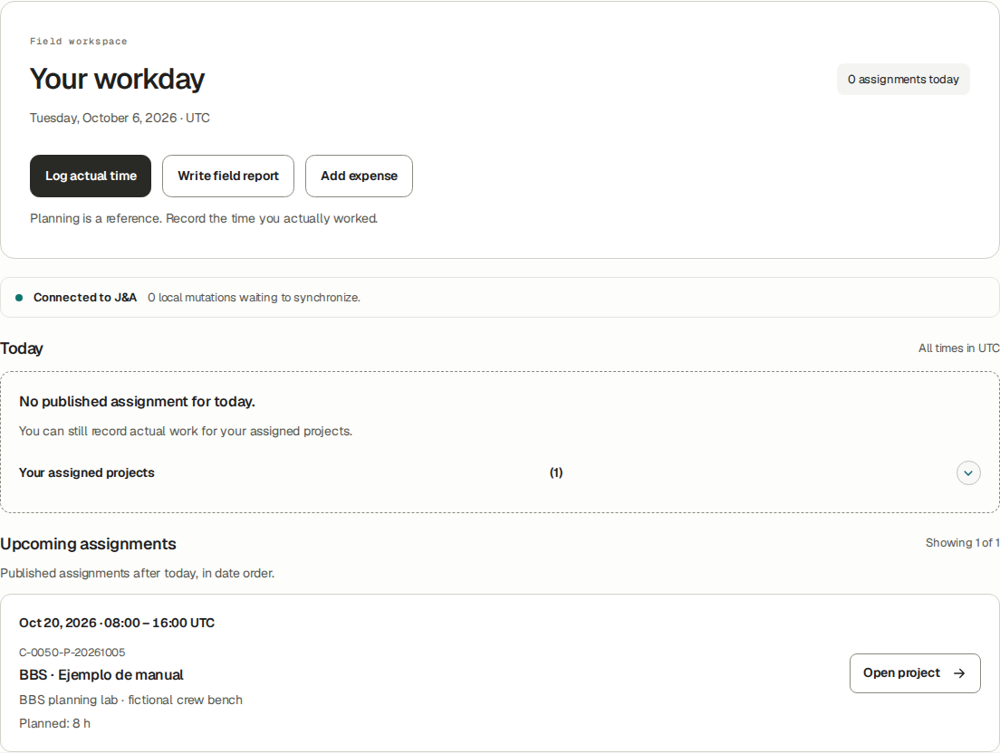
Chief’s own Today agenda shows the October 20 eight-hour plan. The card is operational context; it does not list the technicians’ private pay or create crew time.
J&A Automation · BBS role manual · 6 October 2026
Complete one shared plan with different individual actual hours
Isolated BBS planning lab · synthetic October 20, 2026 work · genuine role sessions · no production hours
Go here: Crew hours → Log team hours; Time → Log time; reviewer → Approvals
The eight-hour plan was the same for all three people, but actual work differed. Technician 1 personally recorded six hours. The Chief recorded seven for Technician 2 through Crew hours, then eight Chief hours separately through its own Time form.
This exercise demonstrates a handoff, not automatic plan completion: actual sources are saved, checked, submitted and independently reviewed. All three synthetic October 20 records were approved by the genuine Project Manager account in the isolated copy.
Do the task
Confirm Technician 1 has already recorded their six-hour source. Do not select that technician in the Chief form for the same work.
In Crew hours, choose October 20 and the BBS project. Select only Technician 2, enter seven Hours per member and an accurate Work performed summary, then Save 1 person. Selecting one member is supported.
Inspect Entries recorded on October 20. The row must belong to Technician 2, show seven hours and Draft. Click Submit after checking the details.
Open your own Time → Log time, select the same project and work date, enter eight actual hours and your own Activity summary, then Save draft.
Check your displayed week and Submit all week drafts. This submits your own Chief drafts, not a second copy of the delegated technician’s source.
The Owner/PM opens Approvals and reviews the three internal-worker sources. Return to Crew hours to verify the seven-hour row says Approved; each worker checks their own Time view.
Verify the result
Final source totals are Technician 1 six hours, Technician 2 seven hours and Chief eight hours; exactly one source per person.
The seven-hour source retains Technician 2 as worker and the Chief as delegated recorder. Chief’s own Time contains eight hours, not fifteen.
Submission is a handoff for review. Chief delegation itself does not grant permission to approve these sources.
J&A Automation · BBS role manual · 6 October 2026
Complete one shared plan with different individual actual hours · continued
If you get stuck
If the wrong person or duration is selected, fix the draft before submission. After submission use the returned/correction workflow described in the correction chapter.
If a duplicate warning appears, inspect existing personal and crew sources rather than treating the published plan as permission to save another identical entry.
J&A Automation · BBS role manual · 6 October 2026
Complete one shared plan with different individual actual hours
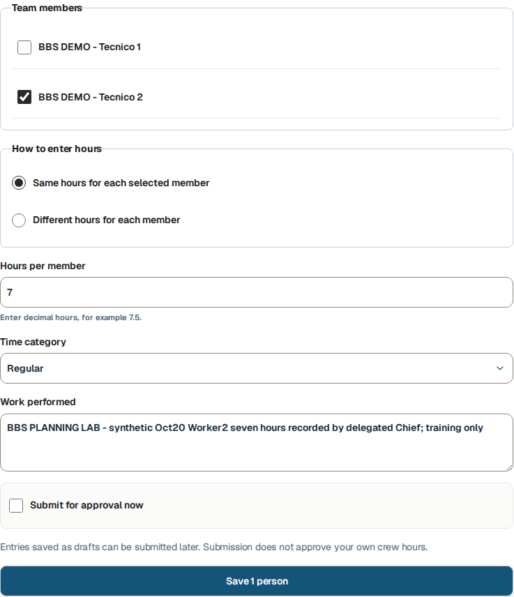
Native Crew hours form selects only Technician 2 and seven actual hours. Technician 1 records their own work, so that checkbox is left unselected.
J&A Automation · BBS role manual · 6 October 2026
Complete one shared plan with different individual actual hours
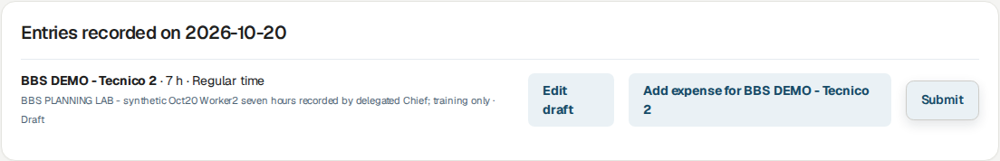
Saved delegated seven-hour draft remains tied to Technician 2 and exposes Submit for the operational handoff.
J&A Automation · BBS role manual · 6 October 2026
Complete one shared plan with different individual actual hours
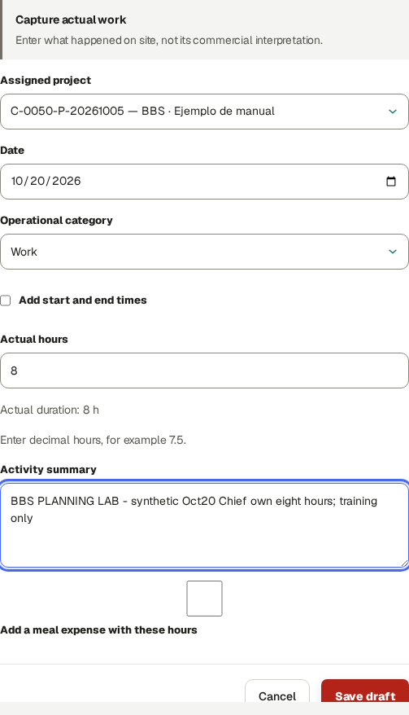
Chief records its own eight hours separately in the personal Time form. This is synthetic isolated training work.
J&A Automation · BBS role manual · 6 October 2026
Complete one shared plan with different individual actual hours
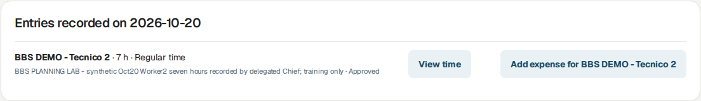
After genuine PM review, the delegated Technician 2 seven-hour source is Approved in Crew hours.
J&A Automation · BBS role manual · 6 October 2026
Reconcile your own weekly target without changing actual work
Isolated BBS planning lab · synthetic October 20, 2026 work · genuine role sessions · no production hours
Go here: Time → Week of → Open week
Expected comes from the effective working schedule and dated project coverage, not from adding published plans or crew sources. In this example, Monday–Friday target 480 minutes each and Saturday/Sunday target zero.
The Chief’s own October 20 row is Actual 8.00h, Expected 8.00h and Difference 0.00h, with Approved status. Technician 1’s personal view is 6/8/−2 and Technician 2’s is 7/8/−1; their weekly comparison rows show Needs note after operational approval.
Needs note flags an approved duration different from the daily expectation. It does not mean the source was returned, and it did not prevent approval. No dedicated Add note or Clear Needs note action was present in the tested controls. Explain differences in the source summary and reports; the comparison can continue to show Needs note.
The weekly total includes scheduled days with no actual records, including future training dates. Check the specific day when reconciling a finished shift. Do not copy a target into fictitious hours or add delegated colleagues’ hours to your own totals.
Do the task
Open your own Time page, enter the week containing the work date and click Open week.
Read Actual, Expected, Difference and Status on the day’s row. Difference is actual minus expected.
Inspect your source’s own approval state separately. Crew delegation does not entitle you to inspect colleagues’ compensation while checking their operational hours.
On a phone, the labelled daily card replaces the wide table. Open day entries locates the actual sources for that date.
Verify the result
Your eight-hour source remains eight actual hours even though you also recorded a colleague’s seven-hour source.
An unknown expectation displays a dash. The application requires unambiguous effective membership/schedule coverage before showing a target.
J&A Automation · BBS role manual · 6 October 2026
Reconcile your own weekly target without changing actual work · continued
If you get stuck
Ask the Owner to review assignment dates, effective schedule and any ambiguous multiple-project allocation when Expected is missing or incorrect.
Keep reports operational. Do not include client billing rates, internal costs, margins or colleagues’ compensation in crew handover documents.
J&A Automation · BBS role manual · 6 October 2026
Reconcile your own weekly target without changing actual work
Chief’s own weekly comparison after PM approval: October 20 Actual 8.00h, Expected 8.00h, Difference 0.00h and Approved.
J&A Automation · BBS role manual · 6 October 2026
Reconcile your own weekly target without changing actual work
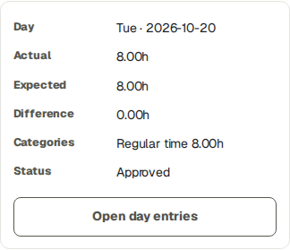
Native phone view of the Chief’s own October 20 daily comparison; eight actual hours match eight expected hours.
J&A Automation · BBS role manual · 6 October 2026
Operate crew controls on a phone or tablet
Isolated BBS role lab · genuine Chief Worker account · dated October 1–31 delegation
Go here: Crew hours → Project / Work date
Phone/tablet views preserve the same dated delegation checks. Use More or the navigation drawer for destinations outside the bottom bar. Intentional internal table scrolling is different from page-level overflow.
Do the task
Choose Project and Work date before selecting members. On narrow screens review the chosen names and individual durations carefully.
Scroll to the saved crew rows or allocation section after saving; verify the result before repeating an action.
Verify the result
Crew views were checked at 1440, 768 and 390 pixels with no page-level horizontal overflow.
If you get stuck
If a control is clipped, report the width and precise action with a safe screenshot. Do not re-save the same batch to compensate for a hidden result.
J&A Automation · BBS role manual · 6 October 2026
Operate crew controls on a phone or tablet
Native 390 pixel Chief crew viewport.
J&A Automation · BBS role manual · 6 October 2026
Operate crew controls on a phone or tablet
Native 768 pixel Chief crew viewport.
J&A Automation · BBS role manual · 6 October 2026
Manage your own profile and ask for support
Reference procedure · current controls/source checked; mutations not exercised in this role lab
Go here: Profile; Notifications; Help
Profile expertise and availability affect planning, not delegation/review permission or actual hours. Security belongs to your individual account: passkey Device name/Register passkey and authenticator setup/recovery should be kept private. These changes were not performed in the Chief lab.
Notifications can lead to returned sources or pending work; marking read does not approve them. Help’s verified contact is admin@j-aautomation.com. Live portal/webmail links are live services. No support message was sent.
Do the task
Maintain genuine own expertise/availability using offered Profile controls. Ask the Owner for crew delegation, account status or review permission changes.
Follow a notification to its current record and inspect state before acting.
Send support the environment, role, project/record ID, date, intended action and exact message. Exclude credentials/private pay.
Verify the result
Chief GET Finance and Approvals returned 403. Delegation is not financial or approval authority.
If you get stuck
If a crew member disappears, check selected date and Owner-grant coverage. If a source is settlement locked, hand it to Finance; do not substitute credentials or duplicate history.
J&A Automation · BBS role manual · 6 October 2026
Verify the crew handover
Isolated BBS role lab · genuine Chief Worker account · dated October 1–31 delegation
Go here: Crew hours → Reports → own Time → reviewer handoff
Use a single handover list for the selected workday; crew recording, your own work and financial review remain separate.
The October 6 readiness audit adds explicit native-browser outcomes and state-specific limits. Per-ID status and source IDs are recorded under docs/evidence/bbs-readiness-20261006/worker-chief. Earlier planning/role-lab screenshots retain their original historical scope; they are not the state of the new readiness sources.
Do the task
Confirm environment/account/project/date and delegated member coverage.
Save each member’s actual duration/category once; inspect shared per person versus individual amounts.
Record each purchase once; allocate one shared receipt only across valid linked shifts and verify the sum.
Submit intended crew rows and your own Time/report drafts.
Read review returns and create linked corrections where allowed. Send settlement guards to Finance.
Confirm current member states and own report states; tell PM which sources remain Submitted/open and which risks remain unresolved.
Verify the result
Lab passes: shared/individual native crew entry, separate Submitted sources, single receipt 20 allocation 10+10, delegated correction 1→0.75 PM Approved, own weekly time Submit and own Daily/Technical PM Approved, denied Approvals/Finance and responsive views.
Readiness native results: own ordinary and current linked time correction Submitted together, count2→0; two crew shifts and one single allocated receipt independently Owner Approved; own Daily/Technical Ready PDF downloads before submission, returned Daily edit/resubmit, and own statement PDF/CSV downloads. See the per-ID audit for exact current states.
J&A Automation · BBS role manual · 6 October 2026
Verify the crew handover · continued
If you get stuck
Reference-only: review-capable Chief approval actions, customer acceptance, own profile/security changes and real bank/email/payroll delivery. Worker-role review permission alone does not enable Approvals. Wrong unallocated crew receipts were withdrawn natively; saved allocation changes require the documented support handoff.
J&A Automation · BBS role manual · 6 October 2026
What was verified and what remains a reference
Isolated BBS role lab · actual browser outcomes and explicit limits
Go here: Verification appendix
Native authenticated browser records, synthetic receipt fixtures and SHA-256 capture manifests are maintained with the guide. Account secrets are excluded. Original billed October 2–5 history and finalized worker settlements were preserved.
Actual saved/submitted/returned/approved states are distinguished from controls merely inspected. The Owner/PM/Finance handoffs used their own genuine role sessions. This evidence does not claim real bank transfers, live equipment changes or production transactions.
The October 6 readiness audit adds explicit native-browser outcomes and state-specific limits. Per-ID status and source IDs are recorded under docs/evidence/bbs-readiness-20261006/worker-chief. Earlier planning/role-lab screenshots retain their original historical scope; they are not the state of the new readiness sources.
Do the task
Chief used an ordinary Worker account with dated October 1–31 grants for Worker 1/2.
Shared two-hour-per-person entries saved as separate drafts and submitted; both remain awaiting operational review.
Different 0.5-hour/1-hour Travel entries saved and submitted; PM approved the first and returned the second.
Delegated 1-hour source corrected to 0.75 hour through a linked replacement, submitted and PM approved.
One USD 20 receipt allocated 10+10 across two crew sources, submitted and PM approved.
Chief own Daily and Technical reports saved, submitted and PM approved.
Chief own 0.25-hour source saved, submitted through its own weekly flow and PM approved.
Own My Pay historical training snapshot inspected; no crew private compensation exposed.
Approvals and Finance denied; desktop/tablet/phone Crew pages fit their viewports.
Additional connected planning lab: original Chief and both technicians received individual eight-hour October 20 plans. Technician 1 authored six actual hours, Chief authored seven delegated hours for Technician 2 and eight personal hours; all three were independently PM approved, with exactly one source each.
J&A Automation · BBS role manual · 6 October 2026
What was verified and what remains a reference · continued
Additional expected-hours comparison: Chief’s own weekly day showed 8/8/0 Approved; technicians’ own views showed 6/8/−2 and 7/8/−1 Needs note while underlying sources remained Approved. Dated crew recorder attribution and individual totals were confirmed.
Additional native role/privacy tests: Worker Finance and Chief Approvals returned expected 403; no client prices, internal costing, margins or colleagues’ compensation appeared in the new operational captures.
Verify the result
See the adjacent task checklist and role capture manifest for source IDs, screen widths, artifact integrity and expected permission denials.
If you get stuck
The historical labs above retain their own scope. This readiness audit additionally tested native dated assignment/delegation setup, wrong unallocated receipt withdrawal, own weekly ordinary/linked correction submission, own Daily/Technical Ready PDF downloads and returned Daily editing, and own statement PDF/CSV downloads. Chief review-capable approval, customer acceptance, profile/security changes and live bank/email remain unperformed.
J&A Automation · BBS role manual · 6 October 2026
Recovery · sources, obligations and immutable history
Use the role’s worked correction lesson and the current record controls. A new purchase is different from a correction to an existing purchase. A payment reversal records a cash-entry correction; it does not amend a finalized compensation entitlement or unlock its time sources.
State
Supported next action
Ordinary Draft
Use Edit/Save draft where present; attach the actual receipt/evidence before Submit. Inspect each saved draft after weekly table entry.
Submitted
Read current state and reviewer handoff. Do not create another source merely because review is pending.
Needs changes
Read the reason. Time uses Create corrected draft where available, then submit/review the linked replacement. A returned Daily/Technical report instead offers Edit and Save changes on the same report, then Submit for review; follow the exact role lesson.
Rejected
Inspect the reason and contact reviewer/Owner. The time detail does not offer the same linked-correction route as Needs changes; do not assume that route exists.
Approved, unlocked
Use the offered linked correction, preserving the original. Re-review the replacement and refresh affected unissued drafts/report versions through their supported controls.
Issued, financially locked or finalized compensation
Stop source editing. Send source ID/project/date, original/correct values, reason, affected invoice/settlement and payment references to Owner/Finance. If no authorized amendment control exists, escalate to platform support.
If you get stuck
For a finalized-compensation guard, send the exact source/date/reason and requested factual correction to Finance/Owner. Wait for a documented authorized resolution and explicit instruction about the source lock. Do not reverse a payment, change work dates or duplicate hours to evade the guard.
J&A Automation · BBS role manual · 6 October 2026
Security · verify your own device and recovery options
Go here: Profile → Account security; Profile → Add availability
Do the task
Check Account security identifies YOUR account even when an authorized workforce profile inspection shows another worker above it. Enroll only your own device. MFA is optional in this release.
For a passkey, enter Device name and choose Register passkey on the approved secure portal. Complete your device’s creation confirmation. Verify Passkey registered for this account, the registered count and named device row. Cancelled/failed registration is not enrollment.
To retire your own lost/obsolete passkey, first confirm you retain another working sign-in method. Select Revoke on the exact device and verify Passkey revoked and removal of its row. If you cannot sign in, use the verified support route rather than another person’s session.
For an authenticator, choose Enable MFA. Keep the setup URI and one-time recovery codes private in the approved password manager. Add the URI to your authenticator, enter its current six-digit Authenticator code and choose Verify MFA. Verify Enabled and Disable MFA appear; enabling without verification is not completed enrollment.
At a later MFA sign-in use Six-digit code → Verify and continue. If the authenticator is unavailable, choose Use a recovery code and enter one unused stored code. If neither method is available, contact admin@j-aautomation.com for identity-verified recovery. Do not send recovery codes or the setup URI to support.
To remove optional MFA while signed in, choose Disable MFA and verify Not enabled/Enable MFA. Confirm the intended own account before doing so. A successful settings change is separate from recovering a lost account.
Where Add availability is offered, fill Starts, Ends, Availability and Note using the displayed time basis, then Save availability. Verify the saved interval/status/note in the list; use Edit availability on that row and save the changed values. Availability is not project membership, a published shift or actual hours.
J&A Automation · BBS role manual · 6 October 2026
Security · verify your own device and recovery options
Isolated recipient’s authenticator setup was verified; the native Enabled state is shown after secret URI/recovery codes disappeared. No usable security material is published.
J&A Automation · BBS role manual · 6 October 2026
Verification · current coverage and historical evidence
English readiness edition: 6 October 2026, based on repository abc12c0961b2 with the recorded readiness fixes. The publication receipt identifies the final commit and deployment. This edition teaches the permitted ordinary cycle and supported handoffs; it does not certify every contract, device or external service.
The current evidence lives in docs/evidence/bbs-readiness-20261006. Its correction register maps all 72 suite findings to tasks, browser evidence or precise reference/support boundaries. Role manifests identify source IDs, state transitions and downloaded artifacts. Historical 5 October outputs remain historical; new screenshots do not rewrite their totals or private bytes.
Recipient activation, actual authenticator verification and own passkey registration/revocation were exercised on a separate isolated recipient. The same account controls are shared, but enrollment was not repeated for every role or physical device. Offline/expired-link and lost-device paths remain precise references where not separately executed.
Weekly submission was exercised with one ordinary draft and one eligible linked correction for Worker, Chief, External Technician and Supplier Coordinator: two selected drafts became two Submitted sources and zero remaining drafts. This does not guarantee that locked, withdrawn, out-of-scope or ineligible corrections will submit.
A final Accounting cut succeeded in a separate clean Finance portfolio; an Auditor read and downloaded its outputs. Original BBS issuer-history and source-reconciliation blockers remain documented. Email transport, real bank movement, accountant approval and genuine customer acceptance are outside the synthetic tests.
Verify the result
For a task described as reference, follow the exact named controls and prerequisites; do not infer that an illustrated outcome was executed. For support-only recovery, preserve the blocked source and obtain the documented receiving result before proceeding. Out-of-role financial information is intentionally excluded from operational guides.